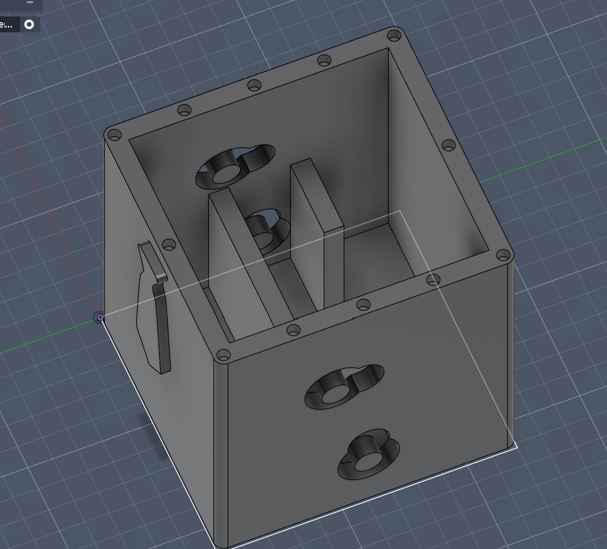
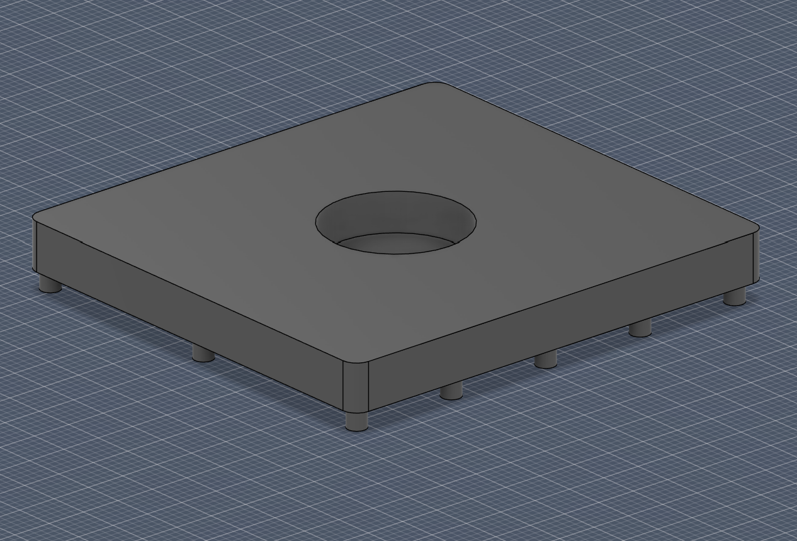
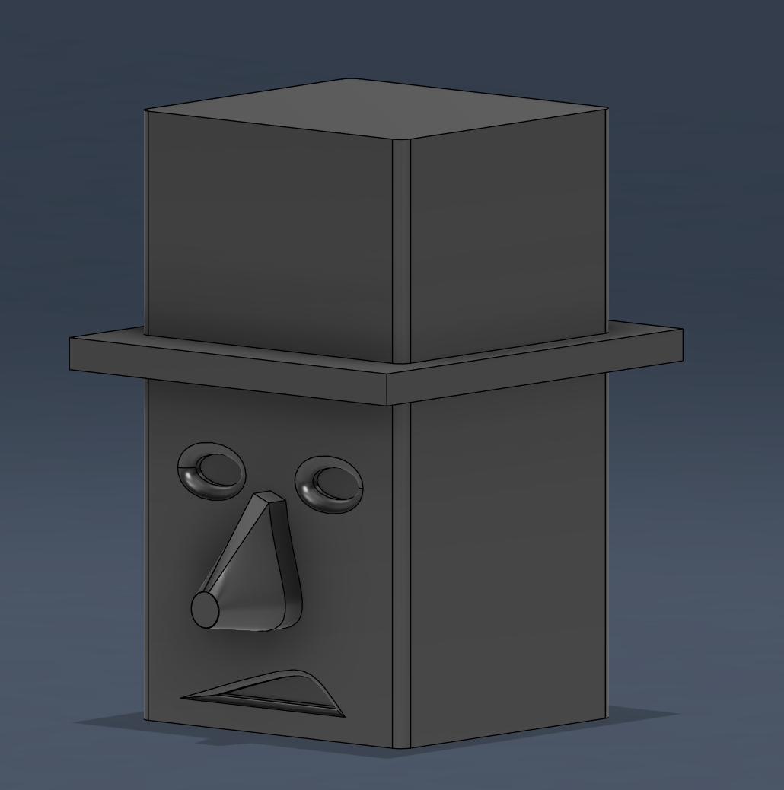
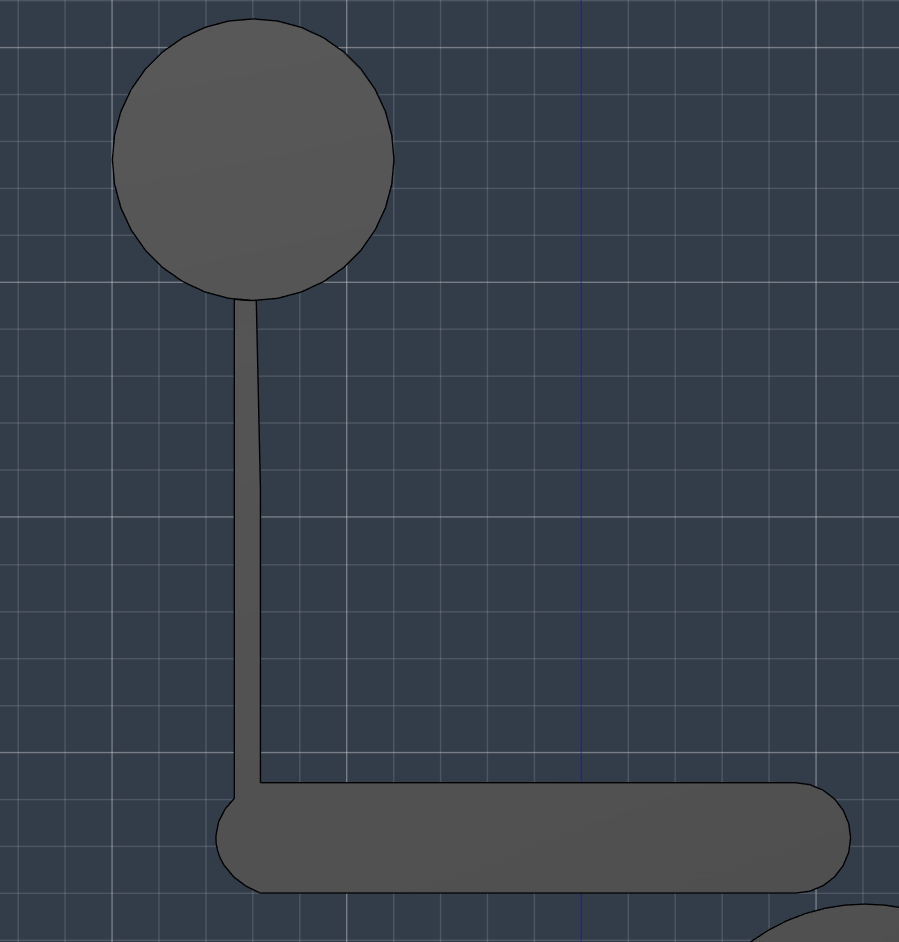
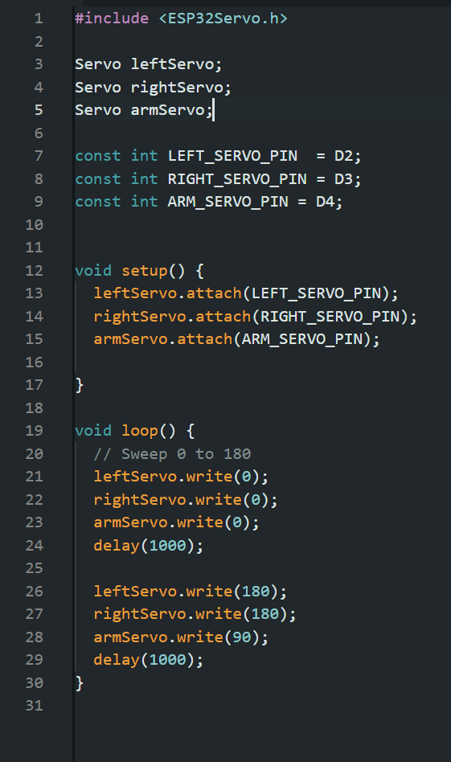
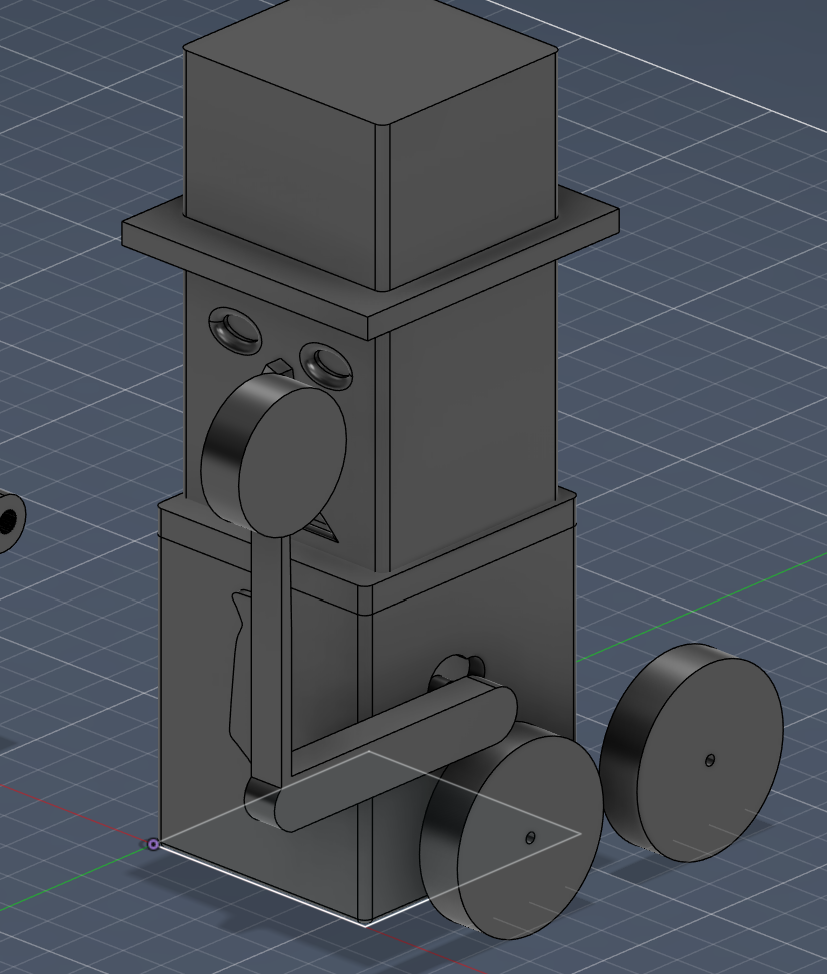

<div class="textcontainer">
<p class="margin"> </p>
<h3>Week 7: Electronic Outputs</h3>
<h4>Assignment: Minimum Viable Product for Final Project</h4>
Here is the robot dancing.
I had to make 3 iterations of the body because the holes for the servos were not properly placced. Now it fits pretty snugly.
I just need to include a piece that fits in between the two pairs of servos. MY arm was also too weak and my head was to big, both issues will be soon fixed.
Here is a video of it moving. I also need 360 degree servos to make the wheels move properly.
<video width="320" height="240" controls>
<source src="robot.MOV" type="video/mp4">
Robot moving and swinging arm.
</video>
<div>
I started with a body that had holes to fit servo motors in, they werent not properly sized and so I had to remake it, and then they were too loose and I had to remake it again, by the third iteration the body was perfect.
<p></p>
<div>
Then I made a lid with a hole for a magnet. It fit perfectly.
<p></p>
Then i made the head. I made it large so it would be easier to knock off the robot, but I made it too large at first and the arm was hitting it.
<p></p>
<div>
The first arm was too weak and so i made it more into a mallet, which helped hit the head.
<p></p>
<div>
the code here is simple because I am waiting to learn how to do RC communication. All the movements work, which is most important for the robot.
<p></p>
</div>
<div>
this is everything put together in fusion <p></p>
</div>
</div>